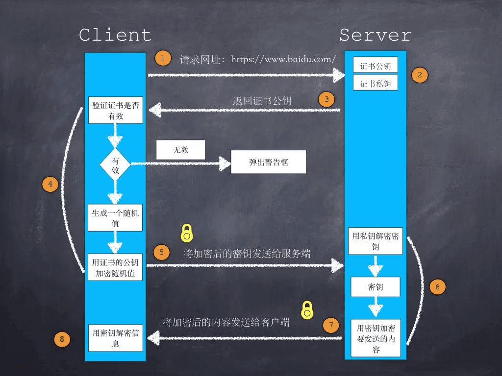

HTTPS
HTTPS（全称：Hyper Text Transfer Protocol over Secure Socket Layer 超文本传输安全协议）
HTTPS在传统的HTTP和TCP之间加了一层用于加密解密的SSL/TLS层（安全套接层Secure Sockets Layer/安全传输层Transport Layer Security）层。使用HTTPS必须要有一套自己的数字证书（包含公钥和私钥）。
HTTPS解决的问题
- 信息加密传输：第三方无法窃听；
- 校验机制：一旦被篡改，通信双方会立刻发现；
- 身份证书：防止身份被冒充。
HTTPS加密过程：
- 客户端请求服务器获取
证书公钥 - 客户端(SSL/TLS)解析证书（无效会弹出警告）
- 生成随机值
- 用
公钥加密随机值生成密钥 - 客户端将
秘钥发送给服务器 - 服务端用
私钥解密秘钥得到随机值 将信息和随机值混合在一起进行对称加密- 将加密的内容发送给客户端
- 客户端用
秘钥解密信息

加密过程使用了对称加密和非对称加密。
对称加密: 客户端和服务端采用相同的密钥经行加密
encrypt(明文，秘钥) = 密文 decrypt(密文，秘钥) = 明文非对称加密：客户端通过公钥加密。服务端通过私钥解密
encrypt(明文，公钥) = 密文 decrypt(密文，私钥) = 明文
因为TLS握手的过程中采用了非对称加密，客户端本身不知道服务器的秘钥，这样通信就不会被中间人劫持。此外这一步服务端还提供了证书，并且可能要求客户端提供证书。关于证书下文会提到，只要有了证书，就能保证和你通信的对方是真实的，而不是别人伪造的。
那然后验证证书呢？
- 客户端获取到了站点证书，拿到了站点的公钥
- 客户端找到其站点证书颁发者的信息
站点证书的颁发者验证服务端站点是否可信- 往上回溯，找到
根证书颁发者 - 通过
根证书颁发者一步步验证站点证书颁布者是否可信
附：
- HTTPS默认使用443端口，而HTTP默认使用80端口。
- TLS就是从SSL发展而来的，只是SSL发展到3.0版本后改成了TLS
- 第一次请求中TLS握手的代价很大
- 后续的请求会共用第一次请求的协商结果
参考：